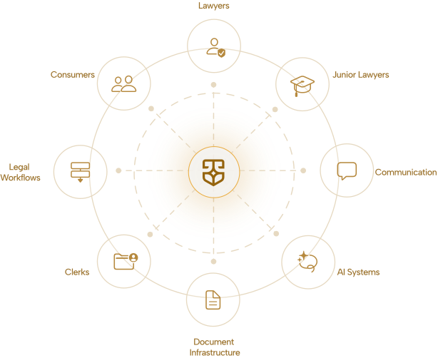

A complete
legal ecosystem.
Jurix is more than a legal platform. It is an operational ecosystem connecting consumers, lawyers, clerks, junior lawyers, AI systems and communication infrastructure together, seamlessly.

Five roles. One coordinated flow.
Consumers
Access legal support more easily, with guidance at every step.
Seeks helpLawyers
Manage practice digitally and efficiently with verified clients.
Provides counselClerks
Documentation, filings, coordination and workflows handled.
Runs operationsJunior Lawyers
Collaborate within organised, supervised operations.
Supports casesAI Systems
Summaries, workflows, organisation and contextual guidance.
Augments allOperational infrastructure for real legal work.
Documentation Clerks
- File collection
- Verification
- Sorting
- PDF bundling
- Upload handling
- Intake coordination
Filing & Court Support
- Complaint filing support
- Court submission support
- FIR follow-up support
- Legal paperwork
Coordination Teams
- Reminders
- Scheduling
- Follow-ups
- Communication
- Status updates
All filing and court actions are carried out by, or under the supervision of, the engaged advocate. Clerks and coordinators provide operational and administrative support only — they do not give legal advice or represent clients.
Coordination that just works.
Encrypted messaging, automated alerts and integrated scheduling — across every role on your case.
Secure Messaging
Encrypted across all stakeholders on a case.
Notifications & Alerts
Hearings, filings, reminders and case progress.
Call Scheduling
Coordinate consultations seamlessly.
File Exchange
Versioned uploads with an audit trail per file.
How a case flows through Jurix.
Intake
AI captures the details.
Consumer + AISelection
You choose a verified advocate.
ConsumerDocuments
Collect & verify.
ClerkFiling
Filed by / under the advocate.
Advocate + clerkHearings
Reminders & rep.
Advocate + Coord.Closure
Outcome & resolution.
All rolesTechnology designed to support legal workflows.
Jurix combines AI and human expertise to improve accessibility, organisation, efficiency and communication across the legal ecosystem.
- Intake summaries
- Auto-organised files
- Legal context Q&A
- Hearing reminders
- Translation
- Drafting assists
AI features provide general legal information and drafting assistance — not legal advice, and not a substitute for a qualified advocate.